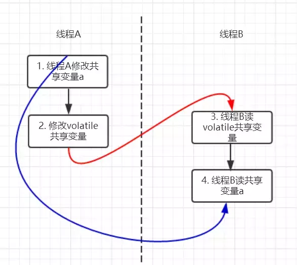
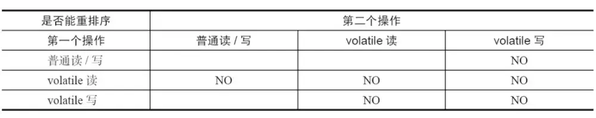
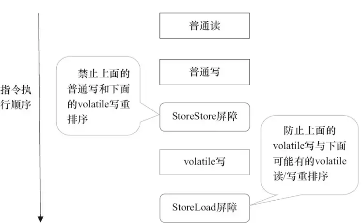
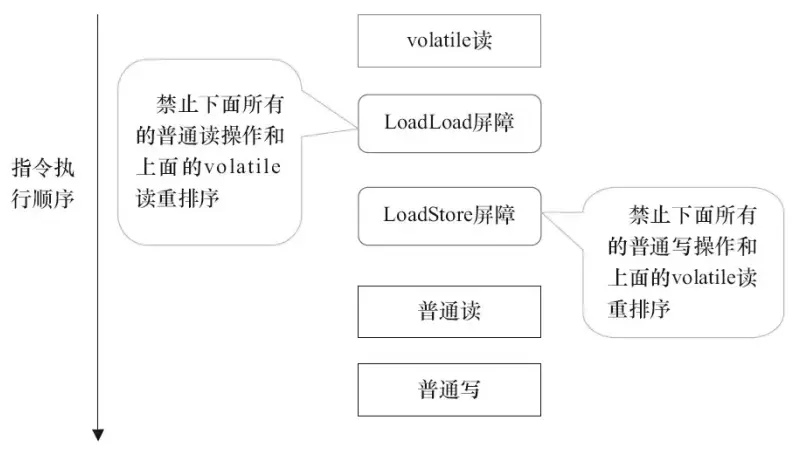

volatile
- volatile 是一个类型修饰符。volatile 的作用是作为指令关键字，确保本条指令不会因编译器的优化而省略。
- 证了不同线程对这个变量进行操作时的可见性，即一个线程修改了某个变量的值，这新值对其他线程来说是立即可见的。（实现可见性）
- 禁止进行指令重排序。（实现有序性）
- volatile 只能保证对单次读/写的原子性。i++ 这种操作不能保证原子性。
volatile 的实现原理
volatile 可见性实现
- volatile 变量的内存可见性是基于内存屏障（Memory Barrier）实现。
- 内存屏障，又称内存栅栏，是一个 CPU 指令。
- 在程序运行时，为了提高执行性能，编译器和处理器会对指令进行重排序，JMM 为了保证在不同的编译器和 CPU 上有相同的结果，通过插入特定类型的内存屏障来禁止特定类型的编译器重排序和处理器重排序，插入一条内存屏障会告诉编译器和 CPU：不管什么指令都不能和这条 Memory Barrier 指令重排序。
源码示例
public class Test {
private volatile int a;
public void update() {
a = 1;
}
public static void main(String[] args) {
Test test = new Test();
test.update();
}
}
字节码示例
0x0000000002951563: and $0xffffffffffffff87,%rdi
0x0000000002951567: je 0x00000000029515f8
0x000000000295156d: test $0x7,%rdi
0x0000000002951574: jne 0x00000000029515bd
0x0000000002951576: test $0x300,%rdi
0x000000000295157d: jne 0x000000000295159c
0x000000000295157f: and $0x37f,%rax
0x0000000002951586: mov %rax,%rdi
0x0000000002951589: or %r15,%rdi
0x000000000295158c: lock cmpxchg %rdi,(%rdx) //在 volatile 修饰的共享变量进行写操作的时候会多出 lock 前缀的指令
0x0000000002951591: jne 0x0000000002951a15
0x0000000002951597: jmpq 0x00000000029515f8
0x000000000295159c: mov 0x8(%rdx),%edi
0x000000000295159f: shl $0x3,%rdi
0x00000000029515a3: mov 0xa8(%rdi),%rdi
0x00000000029515aa: or %r15,%rdi
- lock 前缀的指令在多核处理器下会引发两件事情。
- 将当前处理器缓存行的数据写回到系统内存。
- 写回内存的操作会使在其他 CPU 里缓存了该内存地址的额数据无效。
- 为了提高处理速度，处理器不直接和内存进行通信，而是先将系统内存的数据读到内部缓存（L1，L2 或其他）后再进行操作，但操作完不知道何时会写到内存。
- 如果对声明了 volatile 的变量进行写操作，JVM 就会向处理器发送一条 lock 前缀的指令，将这个变量所在缓存行的数据写回到系统内存。
- 为了保证各个处理器的缓存是一致的，实现了缓存一致性协议（MESI），每个处理器通过嗅探在总线上传播的数据来检查自己缓存的值是不是过期了，当处理器发现自己缓存行对应的内存地址被修改，就会将当前处理器的缓存行设置成无效状态，当处理器对这个数据进行修改操作的时候，会重新从系统内存中把数据读到处理器缓存里。
- 所有多核处理器下还会完成：当处理器发现本地缓存失效后，就会从内存中重读该变量数据，即可以获取当前最新值。
- volatile 变量通过这样的机制就使得每个线程都能获得该变量的最新值。
lock 指令
在 Pentium 和早期的 IA-32 处理器中，lock 前缀会使处理器执行当前指令时产生一个 LOCK# 信号，会对总线进行锁定，其它 CPU 对内存的读写请求都会被阻塞，直到锁释放。 后来的处理器，加锁操作是由高速缓存锁代替总线锁来处理。 因为锁总线的开销比较大，锁总线期间其他 CPU 没法访问内存。 这种场景多缓存的数据一致通过缓存一致性协议（MESI）来保证。
缓存一致性
- 缓存是分段（line）的，一个段对应一块存储空间，称之为缓存行，它是 CPU 缓存中可分配的最小存储单元，大小 32 字节、64 字节、128 字节不等，这与 CPU 架构有关，通常来说是 64 字节。
- LOCK# 因为锁总线效率太低，因此使用了多组缓存。
- 为了使其行为看起来如同一组缓存那样。因而设计了 缓存一致性协议。
- 缓存一致性协议有多种，但是日常处理的大多数计算机设备都属于 " 嗅探（snooping）" 协议。
- 所有内存的传输都发生在一条共享的总线上，而所有的处理器都能看到这条总线。
- 缓存本身是独立的，但是内存是共享资源，所有的内存访问都要经过仲裁（同一个指令周期中，只有一个 CPU 缓存可以读写内存）。
- CPU 缓存不仅仅在做内存传输的时候才与总线打交道，而是不停在嗅探总线上发生的数据交换，跟踪其他缓存在做什么。
- 当一个缓存代表它所属的处理器去读写内存时，其它处理器都会得到通知，它们以此来使自己的缓存保持同步。
- 只要某个处理器写内存，其它处理器马上知道这块内存在它们的缓存段中已经失效。
volatile 有序性实现
volatile 的 happens-before 关系
happens-before 规则中有一条是 volatile 变量规则：对一个 volatile 域的写，happens-before 于任意后续对这个 volatile 域的读。
//假设线程A执行writer方法，线程B执行reader方法
class VolatileExample {
int a = 0;
volatile boolean flag = false;
public void writer() {
a = 1; // 1 线程A修改共享变量
flag = true; // 2 线程A写volatile变量
}
public void reader() {
if (flag) { // 3 线程B读同一个volatile变量
int i = a; // 4 线程B读共享变量
……
}
}
}
- 根据 happens-before 规则，上面过程会建立 3 类 happens-before 关系。
- 根据程序次序规则：1 happens-before 2 且 3 happens-before 4。
- 根据 volatile 规则：2 happens-before 3。
- 根据 happens-before 的传递性规则：1 happens-before 4。

- 因为以上规则，当线程 A 将 volatile 变量 flag 更改为 true 后，线程 B 能够迅速感知。
volatile 禁止重排序
- 为了性能优化，JMM 在不改变正确语义的前提下，会允许编译器和处理器对指令序列进行重排序。JMM 提供了内存屏障阻止这种重排序。
- Java 编译器会在生成指令系列时在适当的位置会插入内存屏障指令来禁止特定类型的处理器重排序。
- JMM 会针对编译器制定 volatile 重排序规则表。

" NO " 表示禁止重排序。
- 为了实现 volatile 内存语义时，编译器在生成字节码时，会在指令序列中插入内存屏障来禁止特定类型的处理器重排序。
对于编译器来说，发现一个最优布置来最小化插入屏障的总数几乎是不可能的，为此，JMM 采取了保守的策略
- 在每个 volatile 写操作的前面插入一个 StoreStore 屏障。
- 在每个 volatile 写操作的后面插入一个 StoreLoad 屏障。
- 在每个 volatile 读操作的后面插入一个 LoadLoad 屏障。
- 在每个 volatile 读操作的后面插入一个 LoadStore 屏障。
volatile 写是在前面和后面分别插入内存屏障，而 volatile 读操作是在后面插入两个内存屏障。
| 内存屏障 | 说明 |
|---|---|
| StoreStore | 屏障 禁止上面的普通写和下面的 volatile 写重排序。 |
| StoreLoad | 屏障 防止上面的 volatile 写与下面可能有的 volatile 读/写重排序。 |
| LoadLoad | 屏障 禁止下面所有的普通读操作和上面的 volatile 读重排序。 |
| LoadStore | 屏障 禁止下面所有的普通写操作和上面的 volatile 读重排序。 |


volatile 的应用场景
- 使用 volatile 必须具备的条件
- 对变量的写操作不依赖于当前值。
- 该变量没有包含在具有其他变量的不变式中。
- 只有在状态真正独立于程序内其他内容时才能使用 volatile。
模式 #1 状态标志
也许实现 volatile 变量的规范使用仅仅是使用一个布尔状态标志，用于指示发生了一个重要的一次性事件，例如完成初始化或请求停机。
volatile boolean shutdownRequested;
......
public void shutdown() { shutdownRequested = true; }
public void doWork() {
while (!shutdownRequested) {
// do stuff
}
}
模式 #2 一次性安全发布（one-time safe publication）
缺乏同步会导致无法实现可见性，这使得确定何时写入对象引用而不是原始值变得更加困难。在缺乏同步的情况下，可能会遇到某个对象引用的更新值（由另一个线程写入）和该对象状态的旧值同时存在。（这就是造成著名的双重检查锁定（double-checked-locking）问题的根源，其中对象引用在没有同步的情况下进行读操作，产生的问题是您可能会看到一个更新的引用，但是仍然会通过该引用看到不完全构造的对象）。
public class BackgroundFloobleLoader {
public volatile Flooble theFlooble;
public void initInBackground() {
// do lots of stuff
theFlooble = new Flooble(); // this is the only write to theFlooble
}
}
public class SomeOtherClass {
public void doWork() {
while (true) {
// do some stuff...
// use the Flooble, but only if it is ready
if (floobleLoader.theFlooble != null)
doSomething(floobleLoader.theFlooble);
}
}
}
模式 #3：独立观察（independent observation）
安全使用 volatile 的另一种简单模式是定期 发布 观察结果供程序内部使用。例如，假设有一种环境传感器能够感觉环境温度。一个后台线程可能会每隔几秒读取一次该传感器，并更新包含当前文档的 volatile 变量。然后，其他线程可以读取这个变量，从而随时能够看到最新的温度值。
public class UserManager {
public volatile String lastUser;
public boolean authenticate(String user, String password) {
boolean valid = passwordIsValid(user, password);
if (valid) {
User u = new User();
activeUsers.add(u);
lastUser = user;
}
return valid;
}
}
模式 #4 volatile bean 模式
在 volatile bean 模式中，JavaBean 的所有数据成员都是 volatile 类型的，并且 getter 和 setter 方法必须非常普通 —— 除了获取或设置相应的属性外，不能包含任何逻辑。此外，对于对象引用的数据成员，引用的对象必须是有效不可变的。（这将禁止具有数组值的属性，因为当数组引用被声明为 volatile 时，只有引用而不是数组本身具有 volatile 语义）。对于任何 volatile 变量，不变式或约束都不能包含 JavaBean 属性。
@ThreadSafe
public class Person {
private volatile String firstName;
private volatile String lastName;
private volatile int age;
public String getFirstName() { return firstName; }
public String getLastName() { return lastName; }
public int getAge() { return age; }
public void setFirstName(String firstName) {
this.firstName = firstName;
}
public void setLastName(String lastName) {
this.lastName = lastName;
}
public void setAge(int age) {
this.age = age;
}
}
模式 #5 开销较低的读－写锁策略
- volatile 的功能还不足以实现计数器。因为 ++x 实际上是三种操作（读、添加、存储）的简单组合，如果多个线程凑巧试图同时对 volatile 计数器执行增量操作，那么它的更新值有可能会丢失。
- 如果读操作远远超过写操作，可以结合使用内部锁和 volatile 变量来减少公共代码路径的开销。
安全的计数器使用 synchronized 确保增量操作是原子的，并使用 volatile 保证当前结果的可见性。如果更新不频繁的话，该方法可实现更好的性能，因为读路径的开销仅仅涉及 volatile 读操作，这通常要优于一个无竞争的锁获取的开销。
@ThreadSafe public class CheesyCounter { // Employs the cheap read-write lock trick // All mutative operations MUST be done with the 'this' lock held @GuardedBy("this") private volatile int value; public int getValue() { return value; } public synchronized int increment() { return value++; } }模式 #6 双重检查（double-checked）
单例模式的一种实现方式，但很多人会忽略 volatile 关键字，因为没有该关键字，程序也可以很好的运行，只不过代码的稳定性总不是 100%，说不定在未来的某个时刻，隐藏的 bug 就出来了。
class Singleton { private volatile static Singleton instance; public static Singleton getInstance() { if (instance == null) { syschronized(Singleton.class) { if (instance == null) { instance = new Singleton(); } } } return instance; } }推荐懒加载优雅写法 Initialization on Demand Holder（IODH）。
public class Singleton { static class SingletonHolder { static Singleton instance = new Singleton(); } public static Singleton getInstance(){ return SingletonHolder.instance; } }